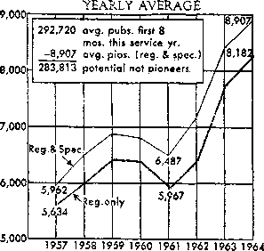

FOR UNITED STATES OF AMERICA
JULY, 1964 “Filled with the holy spirit and ... speaking the word of God with boldness."—Acts 4:31. VOL. VII NO. 7
Gain Strength by Matoai Encouragement
1 Being aware of our need for strength to accomplish the great work before us, we are grateful for Jehovah’s provision to gain strength by mutual encouragement. (Rom. 1: 11, 12) As we encourage others in the ministry this month, we have the opportunity again to offer the thrilling book “Babylon the Great Has Fallen!” God’s Kingdom Rules!
2 Since we will be using the Babylon book for the next three months, you will want to be efficient in giving the sermon. It would be well for study conductors to let a different publisher give either the regular or the simplified sermon at the meeting for field service each Sunday morning during July. This will be a fine way to aid newer ones to get acquainted with the sermon. If you are chosen to give the sermon, your study conductor will let you know ahead of time so you can properly prepare.
3 After the release of the study booklet for the Babylon book, a
number of questions were received
asking if the question booklet
should be placed with each book.
| ” ‘Babylon the Great Has Fallen!’ i i God’s Kingdom Rules!” and a J 4 booklet, for 75c.
J Gaining Strength by Mutual J | Encouragement.—Rom. 1:12.
No, the question booklet is not the booklet to be placed with the book. Rather, leave a 32-page booklet, preferably the Look! booklet. Use either the booklet or the book to start a study, according to the circumstances. Since the Babylon question booklet is not the one to be placed along with the book, congregations need not carry a large stock of the question booklets.
4 Congregations not working unassigned territory will concentrate their efforts, both on Sunday and during the week, on working territories not recently covered with the regular offer. The congregation servant and the magazine-territory servant should check the territory and select that which has been worked least frequently.
5 In unassigned territory, the offer will, be a subscription for The Watchtower and a bound book. When literature is placed and interested persons are located, the name and address should be noted. Call back soon and endeavor to study with these persons as often as you can during the summer. Later, it may be possible to encourage these interested persons to continue to have a Bible study through correspondence. (Please see qm p. 189, 1[11.)
6 Most of our young publishers this month will be on vacation from
What Ifes happened to Pioneering?
1 The January 1962 Kingdom Ministry had an article entitled “What Is Happening to Pioneering?” The purpose of the article was to show that the number of pioneers had declined since 1951. This was a cause for concern to the Society, and the article encouraged many more to take up the pioneer ministry. What has happened to pioneering since? The chart to the right tells the story.
2 The chart shows the monthly average of regular (including district and circuit servants) and special pioneers for each year. From September 1963 to April 1964 there was a monthly average of 8,907 reporting. What a splendid increase from 1961’s monthly average of 6,487 —an increase of 2,420! The Society is pleased to see this fine increase in the number of regular and special pioneers and encourages more to enter the pioneer service. What could be a more worthwhile work in which to engage?
3 Can we reach the goal of 5 percent of total publishers in the school; many of them will be vacation pioneering. Congregations Will arrange midweek activity for you young vacation pioneers and for others who can support midweek witnessing. The summer is an excellent opportunity for you parents to spend more than the usual time in the field ministry with your children.
7 Although summer is a period for conventions and vacations, all publishers should make arrangements to continue to care for Bible studies. If you are going to be away most of the month, try to conduct the study at least once during the assembly or vacation month; or, before you go, take another publisher on the study so that one can conduct it while you are away.
8 The same should be done with (Continued on page 2, col. 3)
pioneer service? Is this too high a goal? The Society does not think so. In 1951, 5.9 percent of the total publishers were in the pioneer ser-
REGULAR AND SPECIAL PIONEERS
Sep.-Apr.
vice. For the 1961 service year the percentage was 2.C. September through April of this service year (Continued on page 4, col. 1)
SECOND MEETING IN JULY
5 min: Introduction, text and comments.
12 min: Theocratic News and Announcements. (Include article “District Assembly Time.”)
18 min: Question-and-answer discussion of the main article.
15 min: Presenting the Good News —discuss and demonstrate points.
10 min: Concluding comments. (Include “What Happened Here in May?” and comment on slogan, based on 1 Peter 5:12, at bottom of page 1.)
THIRD MEETING IN JULY
5 min: Introduction, text and comments.
13 min: Question-and-answer discussion of “Summer Opportunities for United Family Worship.”
14 min: Talk on “What Are You Doing for God?” (See “Watchtower,” March 15, 1964.)
18 min: Start Studies in the “Look!” Booklet.
BIBLE STUDY SERVANT (2 min.) Many have gladly accepted a copy of the “Babylon” book. Now it is our privilege to feed these interested people further by conducting Bible studies with them. Are you conducting a Bible study? Thousands are. In fact, since September 1963 there has been an increase of 43,000 Bible studies in the United States. (Tell of local progress also.) Many publishers have started their studies in the “Look!” booklet by following the suggestions given by the Society.
SCENE I (13 min.) Publisher interrupts Bible study servant. Wants study; but does not remember suggestions previously made on starting studies in the “Look!” booklet. Bible study servant invites publisher to platform. He then directs all to follow along in July “Kingdom Ministry” as he reads: “Renew acquaintance with householder. Recall Bible’s promise of peace and happiness when God’s kingdom rules. (Rev. 21:4) Discuss picture on front cover of ‘Look!’ booklet. Read message from The Publishers inside front cover. Consider first four paragraphs, reading the questions, then the paragraphs, discussing the answers to the questions. Suggest that householder read scriptures on page four during the week. Make arrangements for return call to continue discussion.”
Bible study servant suggests: Look at it this way: First we want to renew our acquaintance with the householder. Be friendly and warm. Second, we want to catch his interest again. Do this by recalling the Bible’s promise of good things to come and applying the promises to him. Then, third, help him learn something new by getting right into the “Look!” booklet, starting with the cover.
Servant suggests publisher restate points to him to make sure publisher has them clearly in mind. Servant commends, then suggests publisher practice it, using him as householder. (Demonstrate starting a study as outlined above.) Servant again commends.
BIBLE STUDY SERVANT (3 min.) Review suggestions with audience, asking three review questions: (1) What should be remembered in renewing acquaintance with householder? (Be warm and friendly.) (2) How can we catch the interest of the householder again? (Discuss blessings to come and apply promises to householder.) (3) What is a simple way to get into a study of the “Look!” booklet? (Start with cover; proceed with pages two, three and four as outlined above.) In all of our service activity we are looking for people with whom we can study. Encourage all to start studies in the “Look!” booklet this week. Do so on the initial call or on the back-call.
10 min: Concluding comments. (Include remarks on slogan at bottom of page 4.)
FOURTH MEETING IN JULY
(Congregations that have five meetings will work up their own fourth meeting, using the material below for the last meeting of the month.)
5 min: Introduction, text and comments.
10 min: Use “Yearbook” experiences to develop theme “Putting Spiritual Interests Ahead of Other Interests.” Keep introduction brief; see H416 of “Progressive Speech Training. ’ ’
A typhoon does not keep brothers in Guam from following Jesus’ counsel at Matthew 6:33 to put spiritual interests first; “other things” are added. (89 fl 290 UI) Going where need is great requires putting spiritual interests ahead of other interests. (249 U2; 168 fi2) Putting spiritual interests ahead of a job offer enables couple in Venezuela to come to dedication and receive other blessings. (272 UI) By a letter from their mother who courageously puts spiritual interests first two fleshly sisters are encouraged to have a Bible study. (130 115) Examine your sphere of activities. Can you more fully apply Matthew 6:33 to your life?
15 min: Question-and-answer discussion of “What Has Happened to Pioneering?”
20 min: Utilizing the Bible Study File.
CHAIRMAN (3 min.) It is suggested that the Bible study servant take three to five Study Record slips from the file each week and use the information thereon as a basis for helpful discussions with those conducting studies. He should commend those doing well and check to see if there are problems that can be resolved by encouraging and timely counsel. In the following demonstrations it is recommended that, where appropriate, Bible study servants select examples from files to illustrate points.
CHAIRMAN (1 min.) Gives setting for first demonstration. Person being studied with for six months; attends and participates in all meetings, making, good progress. Commendation due here.
SCENE I (4 min.) After service meeting servant approaches publisher conducting above study. Commends publisher for progressive aid to interested person. Delighted to see her attending meetings and commenting. Likely will share in service soon. Servant inquires if anything he can do to help. “No,” sister replies, “we are getting along fine and next month I plan to teach her the simplified sermon.” Servant encourages her to keep up the good work.
CHAIRMAN (1 min.) In next scene servant approaches publisher conducting study for over a year and person not yet attending meetings or sharing in service.
SCENE II (4 min.) Following “Watchtower” study, servant approaches publisher conducting above study. Commends publisher for interest in person and inquires if any problems, for student not yet attending meetings or sharing in service. Can he be of some aid? Publisher says he has done his best. Cannot seem to get student to meetings. Servant inquires if publisher employs teaching methods. Ascertains that student not yet taught to underline main points and put comments in own words. Publisher can improve closed-book reviews and looking up scriptures cited but not quoted. This will build up spirituality of student and, together with regular encouragement to attend meetings at Kingdom Hall, should produce results. Publisher happy for counsel. Will apply.
CHAIRMAN (1 min.) In final scene servant approaches publisher conducting study for over two years. Slip reveals conducted only one-half of time. Student attends meetings irregularly but not yet out in service and obviously not making desired progress.
SCENE III (4 min.) Servant interviews publisher. Commends for concern for spiritual progress of student. Asks if satisfied with student’s progress. “Not exactly,” is the reply. Servant kindly shows there are 52 weeks in year and for best progress spiritual feeding should be regular and consistent. Shows only 25 studies held last year. Publisher admits has been somewhat lackadaisical and has not always encouraged student to realize importance of regularly holding study. Publisher sees wisdom of full feeding program. Servant further ascertains publisher has not put forth greatest effort to direct new one to organization. Publisher happy for counsel.
CHAIRMAN (2 min.) What a loving arrangement to have Bible study servants fully utilizing the file in above manner! If approached regarding studies you conduct, accept loving counsel.
10 min: Concluding comments.
FIRST MEETING IN AUGUST
Theme: Daily Walking and Talking with God.
5 min: Introduction, text and comments.
10 min: Talk on monthly theme. (See “Watchtower” of February 15, 1963, pp. 105-117, also August 1, 1964.) 25 min: Question-and-answer discussion of Congregation Organization article. Also demonstrate points.
10 min: Talk by magazine-territory servant, outlining territories not recently worked, midweek arrangements for service. Encourage all to share. 10 min: Concluding comments.
Gain Strength (Cont'd)
those who are being assisted in the ministry. If, for some reason, you will be gone for some time, arrange fox* another mature publisher to work with the one you are assisting, until you return.
9 If you should be traveling outside your home locality during vacation, you will want to attend meetings wherever you may be visiting. By so doing, you will keep spiritually abreast of things. Also, by stopping at a congregation, you will, of course, be a source of joy and encouragement to the local congregation.
Assistance Arrangement (Part 2)
1 In connection with the assistance arrangement usually it is necessary for the overseer or study conductor to talk only to the mature one who will be rendering the assistance. The purpose of the arrangement and points to be worked on will clearly and encouragingly be outlined so the one to give the assistance knows what is to be done. To illustrate, let us consider how the assistance arrangement would work with a new publisher.
2 The overseer or study conductor will commend the publisher or pioneer starting a new one in service the first month he reports. Encouragement will be given to continue the study and also to help the new one to share in service each month, appreciating that sharing in the ministry is part of our worship. (Matt. 7:21) The mature one will thus be aided to see that starting the publisher in service is only the beginning of aiding the new one to share regularly in the ministry and to progress to maturity. This means not only sharing in service each month, but progressing from magazine service to the simplified sermon, regular sermon, back-call activity, and so forth.
3 Who can be aided through the assistance arrangement? Irregular and low-hour publishers, those weak in certain features of the ministry, such as magazine work, back-call
Announcements
Beginning September 6 circuit servants will give the public talk “Do All Religions Lead to Eternal Life?” The new film “Proclaiming ‘Everlasting Good News’ Around the World” will again be shown at circuit assemblies starting in September. The public talk to be given by the district servants will be “Our Divided World—Is It Here to Stay?”
Congregation servants should ascertain the supplies needed by regular pioneers in the congregation and order them, using the regular order blank. Include 12 pink monthly report cards for each pioneer, also weekly record sheets for those who need them. No supplies need be ordered for vacation pioneers.
♦k All who can arrange to vacation pioneer during August are encouraged to do so. Obtain an application, fill it out and give it to the committee, who will send it in right away.
♦ A district assembly will be held in Bermuda, August 6-9.
♦ New publications available:
Bible #H63 —Korean
From Paradise Lost to Paradise Re
gained—Armenian, Bicol, Bohemian, Croatian, Ibanag, Pampango “Let Your Name Be Sanctified” —German “Make Sure of All Things”
—Cinyanja Blood, Medicine and the Law of God
—Swedish
and Bible study work, those needing help in meeting attendance, and so forth. For example, a mature publisher or pioneer could be asked to assist an irregular publisher. The one assisting would be encouraged to aid the publisher, not only to share in the ministry each month, but to improve his witnessing. In another instance one may be a regular publisher or even a pioneer doing very well except in Bible studies. One efficient in Bible study work could be asked to assist the publisher or pioneer to have a greater and more effective part in Bible study service.
4 The one assisting should take the initiative regardless of the kind of assistance to be rendered. He should tactfully and patiently work out arrangements for rehearsing presentations, attending meetings together and scheduling time so the two can share in the ministry together as much as possible.
5 What is to be done if a publisher rendering assistance moves, becomes sick, or other factors necessitate adjustments? Overseers and study conductors will be alert to see that another mature publisher is assigned and fully informed of the arrangements.
G What should be done if the name of the one being assisted appears on lists provided by the assistant congregation servant the first and fifteenth of the month? The study (Continued, on page 4, col. •’)
Living in Hope of a Righteous New World —Cibemba, Norwegian,
Swedish Take Courage—God’s Kingdom Is at Hand! —Cibemba
When God Is King over All the Earth —Norwegian, Swedish
Out of stock in U.S.A.:
Bibles #889X; #A3801 —English
Available again in U.S.A.:
Bibles #33; #55C —Portuguese
God’s Way Is Love —Amharic
O The Society is producing selected study articles from The Watchtower in Grade 2 Braille. These are sent free to persons on the Braille mailing list. For information, write to the Society, Attention: Braille Desk.
♦ Additionally, Recordings for the Blind, Incorporated, 121 East 58th Street, New York, New York 10022, has made recordings of a number of the Society’s books, including the following: Qualified to Be Ministers, “Your Will Be Done on Earth,” “New Heavens and a New Earth,” You May Survive Armageddon into God’s New World, “Let Your Name Be Sanctified,” From Paradise Lost to Paradise Regained, “Babylon the Great Has Fallen!” God’s Kingdom Rules! The disc recordings are sent free of charge to blind persons. You may write to this organization for information at the address listed above.
Summer Opportunities for United Family Worship
1 Theocratic parents anticipate and plan for opportunities to be with their children as much as possible. They appreciate the precious opportunities to be together for study, meetings, service and wholesome recreation. Summer months provide more of such opportunities than any other time of the year.
2 Time spent by children in school and in doing homework is now available for these important things. Christian parents will arrange for the best possible use of such time. Not only is this a time for theocratic training and activity, but keeping young ones properly busy will protect them from “bad associations.” This includes unwholesome influences involving racial issues, materialistic pursuits and overindulgence in sports and other recreational activities.—1 Cor. 15: 33.
3 When secular education stops, theocratic education should increase. A family study in The Watchtower or one of the Society’s other publications should be held at least once a week without fail. Father should conduct, if possible, but mother should when necessary. Reading the Bible together some each day will be especially enjoyable as all keep up with the theocratic ministry school schedule.
4 Plentiful are the opportunities for working together in the service during the summer months. Many, both parents and children, will vacation pioneer. Will you? Midweek service and prestudy work provide added times during pleasant summer days for family service. Time spent together in rehearsing sermons, door-to-door work and all features of the ministry will allow for training and counsel not otherwise possible. The ten-hour goal will be easily reached by each member of the family as they work together and encourage one another.
6 Family happiness and unity are increased when Scriptural principles guide family arrangements. Concerning such principles, Deuteronomy 6: 7 says to parents : “Inculcate them in your son and speak of them when you sit in your house and when you walk on the road and when you lie down and when you get up.” Summer months provide excellent, varied opportunities for carrying out this Bible command. May each theocratic family be blessed this summer in taking advantage of such fine opportunities.
Simplified Sermon for “Babylon” Book Offer
1 New and younger publishers can have a full share in offering the Babylon book by using a simplified sermon. Also, when more experienced publishers encounter busy householders a shorter presentation is appropriate. When just the Babylon book is used, one might say:
2 “Good morning. [Offer additional appropriate greeting.] The purpose of my brief visit is to discuss a question that Bible readers for many centuries have been interested in having answered. Just who is the woman mentioned in the Bible that is given the name Babylon the Great? [Illustration on page 577 may be used.] This Bible-study aid clearly identifies this enemy of God and tells why God is going to destroy her. Also, it builds one’s faith in God’s kingdom. It is yours, along with this printed sermon, on a contribution of 75 cents.”
2 Another presentation could be: “The purpose of my brief visit is to call your attention to the prophecy in the Bible that tells of the judgment of God against his enemy Babylon the Great. Babylon of olden times now lies in ruins. [Show illustration on page three.] Ob-
Pioneering (Cont’d)
it has climbed to 3 percent. Five percent of the monthly average of 292,720 publishers (September 1963-April 1964) would mean 14,636 in the pioneer ministry'
4 The 5-percent goal is easily within reach ! Look at the potential. After subtracting the average number of regular and special pioneers, namely, 8,907, from 292,720 publishers, we have a potential of 283,813 from which to draw’. Surely many of the 283,813 publishers in the United States are in position to pioneer. Publishers, have you taken this matter prayerfully to Jehovah? Have you talked it over with your family to see if at least one in the family can pioneer? Have you talked it over with the circuit servant? Other pioneers? Or the congregation committee? Do so, for it may be the means of aiding you to enroll now as a regular- pioneer. viously this important Bible prophecy does not apply to ancient Babylon, since it is already in ruins. To help you understand w’hat Babylon the Great is, this Bible aid has been prepared. It is yours on a contribution of just 75 cents.”
4 In using the Bible you could say: “Hello, my name is ■------. I
am glad I found you at home because I want to share some information with you about a very important prophecy found in the Bible at Revelation 18:2. There we are told: [Read.] To assist you in understanding when the fall of Babylon the Great takes place and what God’s kingdom means to mankind, this Bible-study aid has been printed.” Make the offer.
5 Thorough preparation will enable us to have well in mind the main points to leave with the householder. If additional time is available, it may be felt best to establish main points firmly by using repetition and teaching ability rather than introducing new material. Short sermons should be uncomplicated, to the point and unhurried. We are interested in getting the truth into people’s minds, and the short sermon makes it possible to do this effectively and opens up opportunities for a further witness.
1 July is a big assembly month for 1964, since 21 of the 36 assemblies will be held entirely within the month. If one of these is your assembly, you should be consummating plans and sending your Room Request form to the city where you expect to attend.
2 It is most important for each one of us to meet with other ministers at the “Fruitage of the Spirit” assembly. Not only is it vital to us because of all the good things that we will learn to equip us as Jehovah’s true ministers, but think, too, of the tremendous witness that will be accomplished in all these cities. Plan to have a full share in the house-to-house work, street magazine and advertising work, and assist personally in bringing others to the assembly.
3 Yes, now is the time to make an affirmative decision that you are going to attend the convention.
♦ Northern Rhodesia reports two appeals heard of groups of publishers sentenced under local ban on house-to-house work. Appeals upheld and 45 publishers released.
Ghana reports 260 baptized at six district assemblies, with 12,298 attending public talk. With 9,326 publishers, the Branch had an 11-percent increase. Nearby Ivory Coast had a 77-percent increase In publishers, while Togoland reached a 20-percent increase, with 439 publishers.
<$• Burundi, East Africa, rejects request for recognition of Witnesses. Four missionaries forced to leave assignments.
$ Cuba reports an increase of 15 percent over last year’s average number of publishers, with new peaks in hours, back-calls, studies and pioneers.
♦ Dominican Republic reports a 36-per-cent increase, with 1,409 publishers.
MAY SERVICE REPORT
Av. Av. Av. Av.
Pubs. Hrs. B-C Bi. St. Mags. Sp’l Pios. 731 143.1 53.7 7.8
Vac. Pios. 2,583 82.7 24.5 2.9
TOTAL 297,015
Public Meetings Held: 29,333 UNITED STATES QUOTA FOR 1964
308,057 Publishers
WHAT HAPPENED HERE SN MAY?
It was most pleasing- to see that publishers averaged 10.3 hours for May. This brings the monthly average for congregation publishers thus far this service year, September through May, to 9.9 hours. We have almost reached our ten-hour goal! Can we average ten hours per publisher for the service year? We can, if each one of us will work out and keep to a schedule that will permit us to spend ten hours or more in the ministry each of the remaining months. With vacations and conventions before us, this will call for good planning and organizing.
Congregation Organization (Cont’d) conductor should go to the one providing help and see what is being done to aid the person. Practical and helpful counsel will very likely overcome whatever problem exists. If, in addition to counsel, help from the conductor is needed, it should be given.
7 Commendation always provides incentive for further fine works. Overseers and study conductors will be quick to commend those putting forth fine efforts to render loving assistance. They will be pleased to discuss with the ones rendering assistance any problems or questions they might have or encounter. Also, they will commend and encourage ones being assisted through the loving assistance arrangement.
Published monthly by Watchtower Bible and Tract Society of New York, Inc.. 117 Adams St., Brooklyn, N.Y. 11201 Second-class postage paid at Brooklyn, N.Y. Printed in U.S.A.
4